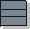

Artifacts >
Artifacts >
 Test Artifact Set >
Test Artifact Set >
 {More Test Artifacts} >
Test Software Design >
Test Class
{More Test Artifacts} >
Test Software Design >
Test Class
Artifacts >
Test Artifact Set >
{More Test Artifacts} >
Test Software Design >
Test Class
Artifact:
| ||||||||||||||||||
 Test Class |
A stereotype of Class in the design model. |
| UML Representation: | Class, stereotyped as «test class» |
| Role: | Designer |
| Optionality: |
This artifact is only used if you are designing and implementing test specific functionality. |
| Reports: | Class Report |
| More information: | Guidelines: Design Class |
| Input to Activities: | Output from Activities: |
The purpose of the test class is to identify the test-specific functionality to facilitate or automate tests. This test-specific functionality should be included in the design model. There are two main types of test-specific classes in a design model:
The Implementer uses the test classes to implement the test specific functionality.
See Properties in Artifact: Design Class.
Test classes are created and modified in parallel with creating and modifying the corresponding design classes.
See Responsibility in Artifact: Design Class.
|
Rational Unified
Process
|